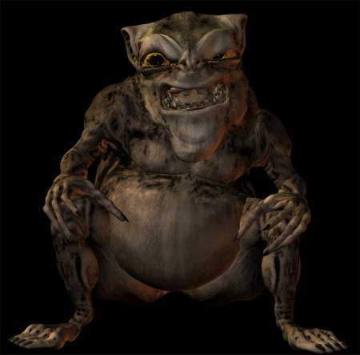

| Climate/Terrain | Any (Lower Planes) |
| Frequency | Very Rare (Common) |
| Organization | Solitary (Clan) |
| Activity Cycle | Any |
| Diet | Carnivoro |
| Intelligence | Low Intelligence (6) 4 punti combattimento |
| Treasure | Come creature di 2 dadi vita |
| Alignment | Neutral Evil |
| No. Appearing | 1 (2d6+3) |
| Armor Class | 6 |
| Movement | 9 |
| Hit Dice | 1+4 |
| Thac0 | 19 |
| No. of Attacks | 1 Morso |
| Damage / Attacks | 1d3 |
| Special Attacks | Vomito Acido |
| Special Defenses | Immunità all’Acido, Rigenerazione, Assorbimento Danni Non Magici |
| Magic Resistance | 10% |
| Size | Small (1 m. di altezza) |
| Morale | Average (8) |
| XP value | 100 |
Descrizione
Il Servo Abissale è una creatura demoniaca inferiore. Queste creature non possono considerarsi parti delle razze demoniache maggiori. In realtà, gli stessi demoni ritengono che queste creature inferiori non possono essere considerate "vere" creature demoniache. Il Servo Abissale ha la forma di un piccolo umanoide corpulento e goffo. Quando cammina, in modo ciondolante e sgraziato, spesso si aiuta con gli arti superiori. La sue fauci sono piene di denti marci ed irregolari. Nonostante le sue piccole dimensioni il Servo Abissale è dotato di una forza pari a quella di un umano medio (in termini di gioco si considera essere dotato di una forza pari a 9).
Combat
Il Servo Abissale può considerarsi fra le più deboli creature demoniache. Questa creatura combatte in modo semplice e rozzo cercando di mordere l'avversario con le proprie fauci.
Ogni volta che, avendo dichiarato un attacco contro un avversario in corpo a corpo, il Servo Abissale effettua un
tiro naturale per l'iniziativa pari a 9 oppure a 10 lo stesso effettuerà in luogo del morso un attacco speciale (al medesimo fattore iniziativa del morso). In pratica, il piccolo demone vomiterà spruzzando sull'avversario che desiderava mordere i suoi corrosivi succhi intestinali. Questo attacco, non richiede alcun tiro per colpire, ma la vittima potrà superare un tiro salvezza contro pietrificazione modificato dal reaction adjustment della destrezza per evitare lo spruzzo e non subire alcun danno. Se il tiro salvezza non è effettuato con successo la vittima sarà investita dallo spruzzo e subirà 1d3+2 danni da acido. Il Servo Abissale è totalmente immune ad ogni attacco basato sull’acido, sia magico che normale. Inoltre, questa creatura possiede anche una leggera immunità alle armi non magiche. Costui riduce il danno prodotto da tali armi di 1 punto, potendo anche azzerare interamente il danno subito.
Il Servo Abissale, infine, è dotato di un
potere rigenerativo
delle proprie ferite ed è in grado di
rigenerare 1 punto ferita al
round. Si noti che questa
rigenerazione terminerà immediatamente qualora i punti ferita del piccolo demone
raggiungono un valore pari od inferiore a 0.
Habitat/Society
I Servi Abissali sono fra i più infimi esseri demoniaci. Spesso queste piccole creature sono utilizzate come servitori e schiavi di demoni più forti di loro ed obbediscono ai loro ordini per paura di non essere uccisi o puniti. Da ciò deriva il nome con cui questi esseri sono conosciuti. Sono così deboli e goffi che, sebbene molto numerosi, non sono utilizzati come orda demoniaca in battaglia non essendo ritenuti degni di combattere e morire in nome delle entità superiori. Sono sempre trattati come servitori ai quali affidare le mansioni più degradanti e sporche. Quando non si trovano sotto il comando di un essere più forte, costoro vivono di stenti in clan stanziali ai margini delle dimore di creature superiori dei quali bramano gli scarti e le attenzioni. All'interno dei loro clan non sono organizzati in modo regolare ma vivono nel disordine e nell'anarchia.
Ecology
Data la loro debolezza questi esseri sono i più richiamati dagli utenti di magia del Primo Piano Materiale. Spesso, infatti, costoro sono utilizzati come infidi servitori da maghi o chierici malvagi. Se non controllati mentalmente dalla magia, però, queste creature non esiteranno appena possibile a tradire il loro padrone sfruttando ogni occasione propizia. Solo con la costante paura essere puniti e di essere uccisi si può sperare di mantenere il controllo di questi esseri.